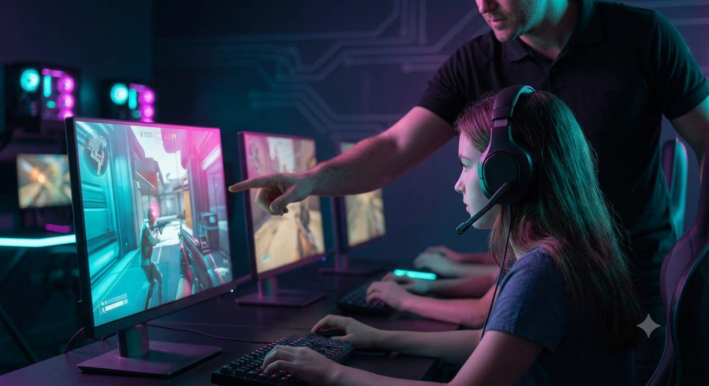
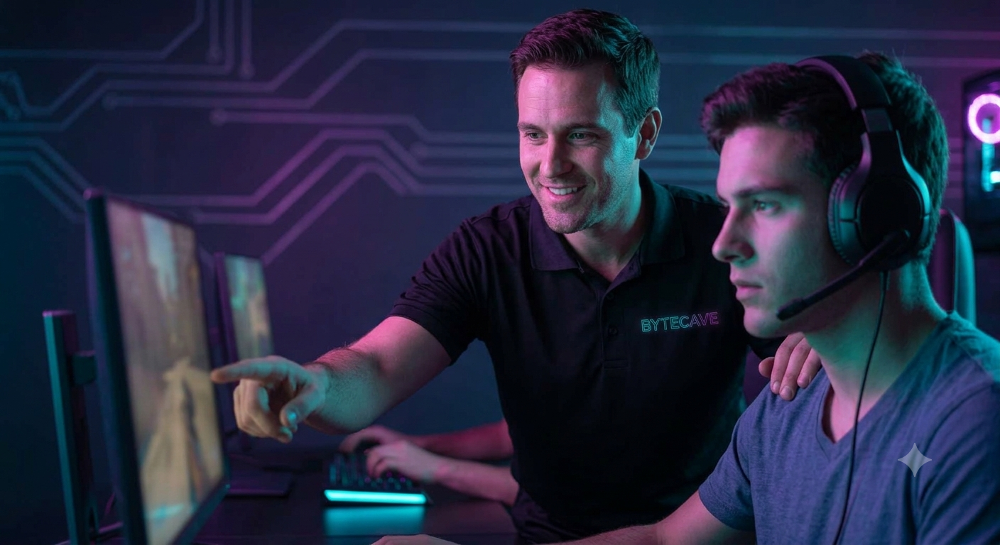

Ny i hulen? Tryghed og god tone fra første klik

Det kan føles overvældende at træde ind i et nyt gaming-miljø for første gang. Derfor gør vi meget ud af at tage imod nye ansigter med åbne arme. Som forælder kan du trygt lade dit barn starte hos os; vores voksne instruktører guider jer igennem alt fra oprettelse af profiler til vores klare regelsæt for digital opførsel.
Vi lægger vægt på, at de unge lærer at passe på tingene og hinanden. Det betyder, at vedligeholdelse af udstyret, oprydning og ordentlig spiltone er en lige så vigtig del af klubaftenerne som selve spillet. Mens de unge gamer, er der altid kaffe på kanden og plads til forældre i vores loungemøbler.
